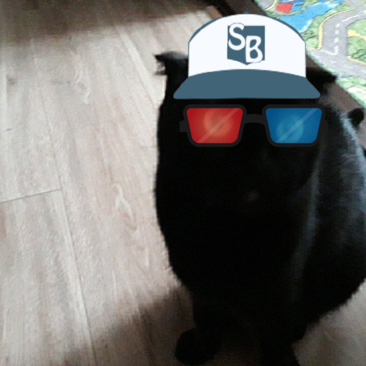

Кузя веб-сайт
Мій кіт дуже любить гратися мишками але не любить гратися м'ячиками.Він дуже грайливий і класний.Я не уявляю свого життя без мого кота, Кузі.знаю Деякі люди говорять що чорні коти до невдач, але я знаю що це не так.Мій кіт незвичайний не із-за того що він чорний а із-за того що він дуже кумедний.Він не їсть рибу і не любить обніматися,Але я його дуже люблю.